SOFIA Science Data Archive: Visualization
The images meeting your search criteria are shown in the instrument
tabs that are the results of your search. Where possible, you are
interacting with the FITS file. (GREAT may not have FITS files,
depending on the data level.) The colored circle that may be overlaid
by default is the search position you submitted. You can add and
overlay catalogs and add other layers to your image. Click on the blue
"Catalogs" tab near the top of the page to add more catalogs. See the Catalogs section for more on catalogs.
Here we describe the interactive image visualization tools, in roughly
the order in which you might encounter them in the window.
Contents of page/chapter:
+The FITS/HiPS Viewer
+Image Information
+Image Toolbar
+Specific HiPS features
+Footprints -- overlaying markers
+Catalogs and Layers
+Breaking out of the pane (and going back)
+Coverage Image
+Automatic FITS-HiPS-Aitoff Transitions
You can interactively explore the image with the mouse. Move your
mouse over any image that is loaded into the viewer. Details about the
image and, specifically, the pixel beneath your mouse cursor, appear
along the top of the window with a variety of useful items. Some
information is updated in real time (such as coordinates); some
information (such as flux densities) is updated when you stop moving
your mouse for a second or two. The image can be interactively
investigated in this fashion.
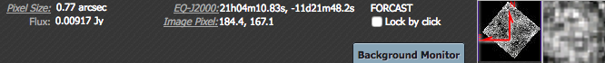
To change the units of the readout, click on the name of the readout
(in the example here, "Pixel Size" or "EQ-J2000" or "Image
Pixel"):

You can change it to other values, as shown.
You can make it 'stick' on a particular place on the image -- tick the
"Lock by click" box and then click on the image at your desired
location. When this is clicked, small "clipboards" appear near the
readout. Click on that icon to copy that position to your
clipboard.

The orientation of the image is given with a compass rose on the
right, next to a zoomed-in view of the image under your cursor. If you
can't see all of these two displays, enlarge your browser window
slightly.
The upper left of the loaded image tells you basic things about the
image you are viewing. The instrument is in black. The field of view
is in green font; this corresponds to the (horizontal) width of the
image window.
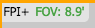 Often, the label is simple, telling
you the instrument and the field of view (FOV).
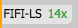 Spectra won't have a
field of view, but will tell you the instrument and the zoom
factor.
 If it looks something like this,
with the arrows present, the file you are viewing has multiple
planes. The arrows allow you to click through the image planes in the
order they are loaded.
If it looks something like this,
with the arrows present, the file you are viewing has multiple
planes. The arrows allow you to click through the image planes in the
order they are loaded.
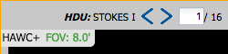 Sometimes the planes have names, and
if so, that is indicated. If there are many planes, you can type in a
plane number to jump directly to that plane.
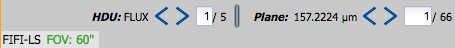 FIFI-LS data can have complicated,
multiple planes.
 Coverage images can have many choices.
See below for much more information, but in
summary:
Coverage images can have many choices.
See below for much more information, but in
summary:
- An Aitoff projection (selected in this example, indicated with the
darker grey) is an all-sky projection (in this case, a DIRBE 60 micron
image). This is showing the results of an all-sky search.
- A search over a large region might result in a HiPS (hierarchical
progressive survey) image, or you can force it to give you a HiPS
image by clicking on "HiPS" in the upper left of the coverage image.
HiPS
 images are created specifically to enable fast, dynamic resolution
changes; zoom in and find smaller pixels than if you zoom out. Choices
of what you can do and what you can manipulate with HiPS images can be
different than your choices for FITS images, but are largely the same
as discussed in the rest of this chapter.
images are created specifically to enable fast, dynamic resolution
changes; zoom in and find smaller pixels than if you zoom out. Choices
of what you can do and what you can manipulate with HiPS images can be
different than your choices for FITS images, but are largely the same
as discussed in the rest of this chapter.
- A search over a small area will result in a FITS image, or you
can force it to give you a FITS image by clicking on "FITS" in the
upper left of the coverage image. It will select a FITS image
corresponding to your current target. All of the available options for
FITS images are discussed in this chapter.
There is a toolbox along the top of the SOFIA window:
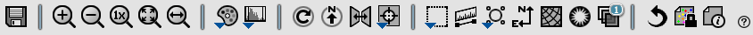
from which you can select a
variety of options, now described. Letting your mouse hover over any
of these icons will result in a "tool tip" that appears in order to
remind you what the icon does. This information is also dynamically
updated below the toolbox itself. Most items apply equally to
FITS and HiPS images, but some (e.g., the color table/stretch) only
apply to FITS images.
 Saving the image.
Saving the image. - The
diskette icon will allow you to save the current image. You can save
files to your local disk or to the IRSA Workspace . Note that you control where the file is
saved on your disk through your browser; your browser may be
configured to store all downloads in a particular location on your
disk.
If the current image is a FITS file, you can save it as a FITS or PNG
or regions file to your local disk. If it is a HiPS file, your only
choices are PNG or regions file. Saved FITS images will not save the
color stretches or overlays; it will just save the underlying FITS
image. Saved PNG files WILL include any overlays or annotations you
have placed on the image, but will not include the underlying FITS
image. Saved regions files will not save the underlying image, but
will just save the overlays as a DS9 Regions file. See the DS9
website for more
information on the syntax of these DS9 region files.
Note that you can save the original or a cropped version of the FITS
file; see the "select region" icon below to crop, and then be sure to
save the FITS image. This is not available for HiPS images.
Note that if you overlay a large catalog,
then turn around and save a regions file from the catalog overlay, the
full catalog may not be saved to the regions file. If you have
>15,000 sources, not every source will be overlaid on the image,
even if you zoom in, and thus will not be in the regions file.
 Zooming in or out.
Zooming in or out.
-
Clicking on these magnifying glass icons zooms in or out of the image.
The readout of the net effect of your zooming on the displayed field
of view (FOV) appears at the top left of the image, in green.
If you click zoom in or out rapidly, a pop-up window appears to allow
you to more rapidly select the zoom level (field of view) you want.
Select the desired level, or click on the 'x' in the upper right to
make the window go away. Here is an example:
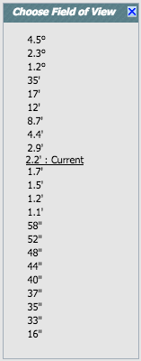
Note that there is a maximum (or minimum) allowed zoom level, and they
are different for FITS and HiPS images. A notification will appear
when you have reached the maximum (or minimum) allowed zoom level for
a given image. To enlarge coverage images more (or less) than that,
please repeat your search to obtain new images with smaller (or
larger) spatial extent. HiPS images are specifically designed for
large areas, so if you need a big area, use HiPS. If you want to zoom
in close enough to see individual original pixels, your best choice is
FITS. To zoom in closer on FITS images from SOFIA instruments,
download the images to your disk and use another viewer of your
choice.
See also the section below on changing coverage
images, specifically that on automatic transitions while
zooming.
Note also that if spectra are displayed, sometimes the zoom level
isn't particularly well behaved, because spectra are intrinsically
different than images.
 Zooming to a 1-to-1 size.
Zooming to a 1-to-1 size.
- Clicking this icon will zoom the image such that one pixel in the
image is one pixel on your screen. This option is only available with
FITS images; HiPS images by their nature have pixels of varying sizes,
so this button has no meaning in this case.
 Fit image to screen or fill
screen
Fit image to screen or fill
screen
-
These two icons are designed to maximize the available space in your
browser window. The first one automatically picks a zoom level such
that the image entirely fits within the available space. The second
one automatically picks a zoom level such that the image fills as much
of the available space as possible (e.g., it is zoomed such that short
axis of the window is filled with the image, whether that short axis
is left-right or up-down).
This is available for both FITS and HiPS images, though note that FITS
images retrieved from IRSA using this tool are typically square, and
HiPS images cover the sky, so fitting the image to the screen
might not be what you want to do.
 Changing the color table.
Changing the color table.
- This icon enables you to change the color table of the
displayed image. (This option is only available for FITS, not HiPS,
images.) When you click the button, a pull-down menu appears
with a wide variety of color table choices. Select your new color
table from the options shown:

 Changing the color stretch.
Changing the color stretch.
- This icon enables you to change the color table stretch of the
displayed image. (This option is only available for FITS, not HiPS,
images.) When you click the button, a pull-down menu appears
with a variety of choices. You can choose from a set of pre-selected
options:

If you pick the
first one, "color stretch", you can customize the stretch. A pop-up
window appears with a histogram of the values in the image, and you
can change the stretch type and range.
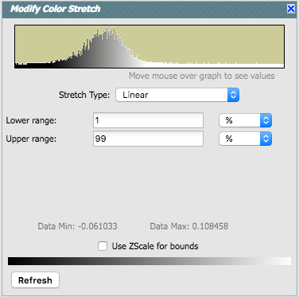
If you pick a color stretch from the
pre-defined options, the pop-up window reflects this change. (Example: pick
'Linear stretch to 99%'. Go back to "color stretch". Note that it has
filled out the stretch type and ranges to reflect the current choice.
Then -- either with the pop-up window still up or not -- go back and
pick a different pre-defined stretch from the standard options. Note
that the values in the pop-up change to reflect this current choice.)
 Rotating the image to any
angle
Rotating the image to any
angle
- This feature allows you to rotate the image about the displayed
center of your image to any angle of your choice, in degrees. (This
option is only available for FITS, not HiPS, images.) It will rotate
the image counter-clockwise (to the left) East of North if the image
has a WCS embedded in it.

You
can type a number in the "angle" box, or use the slider, to rotate the
image. To bring it back to North-up, click on the "North up" icon in
the pop-up or in the main image toolbar. To exit the pop-up without
making further changes, hit the 'x' in the upper right of the
pop-up.
 Rotating the image so that North is
up.
Rotating the image so that North is
up.
- Images may already be oriented such that North is up, or close to
it. However, when interactively investigating images, or in certain
situations, you could find yourself in a situation where North is not
necessarily up. Clicking this icon will orient the selected image so
that North is up. (This option is only available for FITS, not HiPS,
images.)
 Flipping the image on the y-axis.
Flipping the image on the y-axis.
- Clicking on this icon flips the image on the y-axis. (This option
is only available for FITS, not HiPS, images.)
- 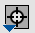 Re-center the image.
- Clicking this icon produces a pull-down menu:

By default, "Pan by table row" is turned on, but, depending on how you
have loaded your images, it may not seem to do very much. If you have
search results scattered over the sky, and you change your coverage
view to FITS (instead of Aitoff or even HiPS), as you scroll through your list
of search results, the FITS image underneath will reload as needed
when you have selected an observation in a different part of the
sky.
Example of "Pan by table row": Do an all-sky search,
for all FORCAST results in any configuration. Click on the FORCAST tab
in the left pane and the Coverage tab in the right pane. Click on
"FITS" in the upper left of the coverage image, instead of Aitoff.
Move your mouse over to the FORCAST tab and scroll through the table.
The FITS image dynamically updates when it needs to show you a different
part of the sky.
Other choices are to center on the target of the observation, center
the image in the window, or center on a target of your choice. For the
last of those, you can simply center on that target, or center and
leave a marker on the image at that location.
 Selecting a region.
Selecting a region.
- When you click this icon, you get a pulldown from which you can
select an elliptical or rectangular selection. After you make your
choice, at first, nothing seems to happen. However, you can now click
and drag in the image, selecting a box or ellipse on the image. This
region can be resized by grabbing and dragging the corners of the box.
You can make a new region right away by holding down the shift key and
clicking and dragging to select a new region. When you have selected
a region of the image, additional icons appear above the image, and
exactly which icons you see is a function of whether you are working
on a FITS or HiPS image: 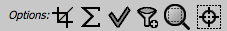 These icons will allow you to (from left
to right):
- (FITS only) crop the image to the selected region (then you can save the
cropped FITS image via the save icon described above);
- (FITS only) obtain statistics from the image on the region;
- select the catalog sources overlaid on the image within
the region (highlights the sources in the list and plot, if there is a
catalog overlaid);
- filter the overlaid catalog down to the sources within the enclosed
area (if there is a catalog overlaid);
- zoom the image to fit the selected area;
- recenter the images on the selected area.
You can save the cropped FITS image via the save icon (described
above). The statistics option results in a pop-up that looks something
like this:

If you put your
mouse over the row of the table in the pop-up, that location appears
as an 'x' on the image. If you have a catalog overlaid, selecting
sources with this tool highlights them in the catalog list. When you
impose a filter, the filters icon changes above the catalog to
indicate that there is a filter applied (in this case just one filter:
 ). To clear the filters, click on
the cancel filters icon (which also appears after you impose filters):
). To clear the filters, click on
the cancel filters icon (which also appears after you impose filters):
 .
.
 Measuring a distance.
Measuring a distance.
- When you click this icon, at first, nothing seems to happen.
However, you can now click and drag to draw a line on the image, and
the length of the line is displayed (in the middle of the line). The
units for the measured distance (and the color of the overlay) can be
changed from the "layers" icon (described below). You can
calculate the difference in RA and Dec separately via the layers icon
as well; find the layer associated with the distance measurement and
tick the "offset calculation" box. When it displays the offset
calculation, it will give you the angle in degrees in one corner, and
the length of the line segment in the RA and Dec directions, in the
units you have specified. Clicking on this icon a second time removes
the distance tool. (You can also remove this layer via the layers
icon.)
 Put a marker on the image.
Put a marker on the image.
- When you click this icon, a pull-down menu appears with several
possible options:

The first
overlay choice (simply called 'marker') is a red circle. Initially, it
appears in the center of the images, and is meant to be moved to
wherever you first click in the image. It looks like this:  . The dash-dot line around it means that it
is 'active', so you can move (click and drag the marker) or resize it
(click and drag the dash-dot boundary). You can change the color
of the marker (and change the label) via the "layers" icon (described
below). You can also remove this layer via the layers icon. There are
several additional options in the pulldown, enough that they have
their own section below.
. The dash-dot line around it means that it
is 'active', so you can move (click and drag the marker) or resize it
(click and drag the dash-dot boundary). You can change the color
of the marker (and change the label) via the "layers" icon (described
below). You can also remove this layer via the layers icon. There are
several additional options in the pulldown, enough that they have
their own section below.
Note that if you swap between HiPS and FITS and back again, it
will include a region on the HiPS image that is the footprint of the
FITS images you had just loaded. A label appears at the center of that
footprint, which may be disconcerting if you are not zoomed out enough
to see the region itself. Here is an example, zoomed out so it is
clear what is going on; this marker is another layer in the image:

 Add a compass rose
Add a compass rose
- When you click this icon, arrows appear on the image showing
which direction is North and which is East. Clicking on this icon a
second time removes the compass rose. (You can also remove this layer
via the layers icon, described below.)
 Add a coordinate grid.
Add a coordinate grid.
- Click on this icon to overlay a coordinate grid on the image.
Click it again to remove it. Customize the units of the grid (to,
e.g., Galactic coordinates) via the "layers" icon (described
below).
 Read in a DS9 Regions file
Read in a DS9 Regions file
- When you click this icon, you get a pop-up window from which you
can read in a DS9 regions file from your local disk. See the DS9 website for more information on the syntax of
these DS9 region files. The supported regions are text, circle, box,
polygon, line, and annulus. To make this window go away without doing
anything, click on the 'x' in the upper right of the pop-up.
 Viewing/changing the layers on the
image.
Viewing/changing the layers on the
image. - If you've been following along by trying these
various options, you now have an image with a lot of annotations on
it. The number that appears in blue over the layers icon tells you at
any given time how many layers you have on the currently selected
image. If you click this layers icon, you will get a pop-up window
with a list of all the layers you have on top of the selected image.
From the pop-up, you can turn layers off and on, at minimum, but you
can often also change exactly what is displayed and what
colors/symbols get used for it. Here is an example of a well-populated
layers pop-up.
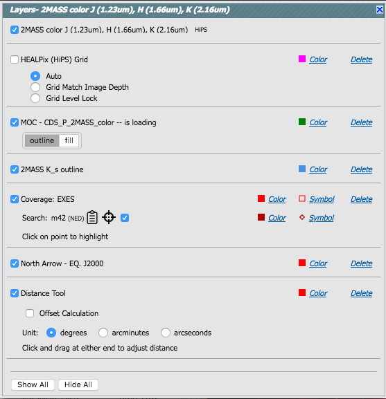
To change
colors of a layer, click on the 'colors' link to be taken to a new
pop-up from which you can select a new color. Some layers allow you to
set additional parameters from this layers pop-up, like the labels or
rotation angle of a footprint. To delete a layer, click on 'delete'.
Some layers appear that do not have that option; to remove that layer,
click on the corresponding icon from which you added that layer.
Alternatively, you can "show all" or "hide all" with the buttons on
the lower left of the pop-up window. To make this pop-up window go
away, click on the 'x' in the upper right of the pop-up.
Note that for the coverage of each instrument, there are additional
options:
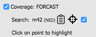
The tickboxes indicate "show this item". The "Search" row reminds you
of the target on which you searched -- here, it was M42, where the
coordinates were resolved by NED (as opposed to Simbad). The two icons
next in that row indicate, respectively, "copy this location to the
clipboard" and "center image on this position." The last row reminds
you that you can click on items in the image and have the
corresponding observation highlighted
in the image and in the table.
 Restoring everything to the
defaults
Restoring everything to the
defaults
- If you've played around a lot with the image, you may want to undo
everything you've done. Click this button to restore everything to
their original default values. Some layers may persist; remove them
via the layers icon described above.
 Lock/unlock image color tables
and overlays
Lock/unlock image color tables
and overlays
- The SOFIA Science Data Archive has "lock image colors"
turned on by default. In other words, all the images that you have
loaded are linked together for color tables and overlays. You can click
on this icon to turn off this linkage among the images, enabling you
to change images on an individual basis. Click it again to
re-enable it.
 Viewing the image header.
Viewing the image header.
- This icon displays a pop-up window with the FITS header of the
background image (or information about the HiPS image). If you click
on the columns in the pop-up, it will sort the keywords alphabetically
by that column. This is useful for finding individual keywords in
particularly densely populated FITS headers. Click the header again to
sort in reverse-alphabetical order, and a third time to return to the
default order. Below are examples of the original and sorted FITS
header. This is an interactive table, so all the filtering tools apply here too. To
make this window go away, click on the 'x' in the upper right of the
pop-up, or click "close" on the bottom.
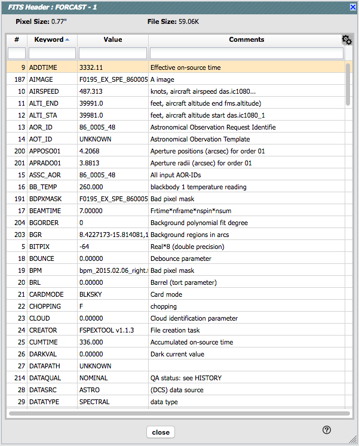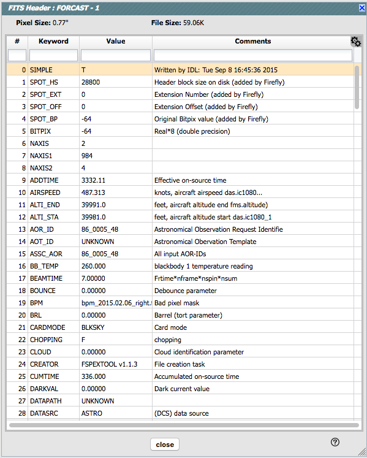 Further, you can click
on the gears in the upper right of the window to bring up a dialog box
via which you can filter down the header keywords (using the same
syntax as the other filters):
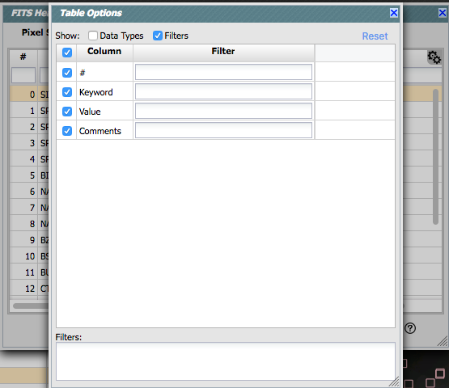
 Getting help.
Getting help.
- Clicking on this icon takes you to this help page.
Specific HiPS Features
HiPS (hierarchical progressive survey) images are
different than FITS images, and as such, the choices of what you can
do with the HiPS images are different than what you can do with the
FITS images. Choices you can make for HiPS images are sometimes
different than what you get for FITS images.
The whole point of HiPS images is to provide on-demand resolution
changes. Zoom out, and it loads large pixels. Zoom in, and it loads
smaller pixels. HiPS images are designed to cover large areas of sky
efficiently. If you need to visualize many degrees, this is the image
type to use.
There are HiPS images from all over the world; the complete list of
HiPS images available from the IRSA Viewer search page includes (once
the "IRSA Featured" checkbox is unchecked) many HiPS images from CDS .
HiPS images have the color and stretch set by the person who
originally made them. Thus, you cannot change the color/stretch of
HiPS images from within IRSA Viewer. This is why there may be multiple
versions of some data sets in the list of HiPS images.
You can't save HiPS images from within IRSA's tool. To download your
own copy, you will have to track down the original source of the
image.
Catalog searches (see Catalogs section) on
top of HiPS images are limited to a maximum of 5 degrees.
Footprints
The marker icon () has a pull-down menu with
several possible options:
Each of these can expand to additional choices, for example, SOFIA
expands as follows:
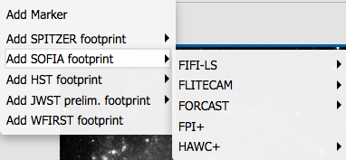
We now describe these various footprints here.
For each of these choices, the markers appear initially at the current
target in the loaded image, which is often at or near the center of
the loaded image. The first mouse click you make in any of the
images will move the marker to that location.
Each of these marker choices, when overlaid and/or selected as
'active', has a large circle surrounded by 4 small circles located at
the edge of the large circle. These so-called "handles" allow you to
resize and/or rotate the marker, depending on the nature of the
marker. These handles only appear when the marker is selected as
active, and they are in the same color as the marker itself.
Troubleshooting and Tips:
- Some of these footprints are large. If you overlay, say,
a Nancy Grace Roman Space Telescope (WFIRST) footprint on a FORCAST
image, you may need to zoom out a considerable amount before you can
see the Roman footprint. You will see the center indicator of the
marker before you will see the Roman footprint itself.
- You can add multiple copies of the same marker using the layers pop-up
(described generally above). You can also add a label to the marker
from the layers pop-up, or change its color.
- If you have many footprints on the same image, you may have
trouble grabbing and moving footprints lower in the stack of layers on
the image. For example, overlay footprint 1, then footprint 2, and you
might have a hard time grabbing and rotating footprint 1 after
footprint 2 has been added. The only workaround here is to use the
layers pop-up (described generally above) to hide footprint 2, then
move footprint 1, then restore footprint 2.
The first overlay choice (simply
called 'marker') is a red circle.
The remaining markers are all footprints from various telescopes:
Spitzer, SOFIA, HST, JWST, and Roman. HST, JWST and Roman are derived
from information provided via MAST (see http://gsss.stsci.edu/webservices/footprints/help.html
.) For JWST and Roman in
particular, they are pre-launch values.
 Spitzer/IRAC 3.6 and 4.5 micron
footprints. These two footprints are placed separately
from each other. The footprint can be moved or rotated. Click and drag
the center of the footprint. A circle appears with four small circles
("handles") around it. Grab and drag the small circles to rotate it,
or drag the big circle to move it. Change the color, delete, or add
more copies of the IRAC footprints from the layers pop-up:
Spitzer/IRAC 3.6 and 4.5 micron
footprints. These two footprints are placed separately
from each other. The footprint can be moved or rotated. Click and drag
the center of the footprint. A circle appears with four small circles
("handles") around it. Grab and drag the small circles to rotate it,
or drag the big circle to move it. Change the color, delete, or add
more copies of the IRAC footprints from the layers pop-up:
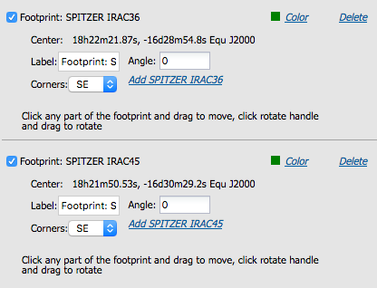
 SOFIA footprints.
Several different SOFIA footprints are available; the graphic here
shows a selection of them. The available footprints (all of which are
placed separately) are:
SOFIA footprints.
Several different SOFIA footprints are available; the graphic here
shows a selection of them. The available footprints (all of which are
placed separately) are:
- FLITECAM
- Imaging
- Grism ABBA
- Grism AB
- FORCAST
- FIFI-LS
- Blue (50-120 microns)
- Red (110-200 microns)
- FPI+
- HAWC+
- 53 microns (Band A), Total Intensity
- 53 microns (Band A), Polarization
- 89 microns (Band C), Total Intensity
- 89 microns (Band C), Polarization
- 154 microns (Band D), Total Intensity
- 154 microns (Band D), Polarization
- 214 microns (Band E), Total Intensity
- 214 microns (Band E), Polarization
Change the color, delete, or add
more copies of the SOFIA footprints from the layers pop-up.
 HST footprints.
You can overlay the whole focal plane footprint, shown here, or
individual instrument footprints (NICMOS, WFPC2, ACS/WFC, ACS/HRC,
ACS/SBC, WFC3/UVIS, and WFC3/IR). Consult the HST documentation for specifics on which apertures are which. The
footprint can be moved or rotated. Click and drag the center of the
footprint. A circle appears with four small circles ("handles") around
it. Grab and drag the small circles to rotate it, or drag the big
circle to move it. Note that if you overlay the
footprint on a very small image, nothing will appear to have happened.
You need at least a 45 arcmin image to comfortably see the footprint.
Change the color, delete, or add more copies of the HST footprints from
the layers pop-up.
HST footprints.
You can overlay the whole focal plane footprint, shown here, or
individual instrument footprints (NICMOS, WFPC2, ACS/WFC, ACS/HRC,
ACS/SBC, WFC3/UVIS, and WFC3/IR). Consult the HST documentation for specifics on which apertures are which. The
footprint can be moved or rotated. Click and drag the center of the
footprint. A circle appears with four small circles ("handles") around
it. Grab and drag the small circles to rotate it, or drag the big
circle to move it. Note that if you overlay the
footprint on a very small image, nothing will appear to have happened.
You need at least a 45 arcmin image to comfortably see the footprint.
Change the color, delete, or add more copies of the HST footprints from
the layers pop-up.
 JWST footprints.
You can overlay the whole focal plane footprint, shown here, or
individual instrument footprints (FGS, MIRI, NIRCAM, NIS, and NIRSPEC).
Note that if you overlay the footprint on a very
small image, nothing will appear to have happened. You need at least a
30 arcmin image to comfortably see the entire JWST focal plane. Please
consult the JWST
documentation for details
about the footprints. In all cases, if the footprint is 'active', a
circle near the middle of the footprint will appear with four small
circles ("handles") around it. Grab and drag the small circles to
rotate it, or drag the big circle to move it. Change the color,
delete, or add more copies of the footprints from the layers pop-up.
JWST footprints.
You can overlay the whole focal plane footprint, shown here, or
individual instrument footprints (FGS, MIRI, NIRCAM, NIS, and NIRSPEC).
Note that if you overlay the footprint on a very
small image, nothing will appear to have happened. You need at least a
30 arcmin image to comfortably see the entire JWST focal plane. Please
consult the JWST
documentation for details
about the footprints. In all cases, if the footprint is 'active', a
circle near the middle of the footprint will appear with four small
circles ("handles") around it. Grab and drag the small circles to
rotate it, or drag the big circle to move it. Change the color,
delete, or add more copies of the footprints from the layers pop-up.
 Nancy Grace Roman Space Telescope
(WFIRST) focal plane footprint. As above, the footprint can
be moved or rotated. Click and drag the boresight (the cross hairs),
which appears by default to the upper right of the array of squares.
A circle appears, centered on the boresight, with four small circles
("handles") around it. Grab and drag the small circles to rotate it,
or drag the big circle to move it. Note that if you
overlay the footprint on a very small image, nothing will appear to
have happened. You need at least a 60 arcmin image to comfortably see
the footprint, and even then you will probably have to click and drag
to see the entire footprint. Consult the WFIRST
documentation for
specifics on the apertures. Change the color, delete, or add more
copies of the Roman footprint from the layers pop-up.
Nancy Grace Roman Space Telescope
(WFIRST) focal plane footprint. As above, the footprint can
be moved or rotated. Click and drag the boresight (the cross hairs),
which appears by default to the upper right of the array of squares.
A circle appears, centered on the boresight, with four small circles
("handles") around it. Grab and drag the small circles to rotate it,
or drag the big circle to move it. Note that if you
overlay the footprint on a very small image, nothing will appear to
have happened. You need at least a 60 arcmin image to comfortably see
the footprint, and even then you will probably have to click and drag
to see the entire footprint. Consult the WFIRST
documentation for
specifics on the apertures. Change the color, delete, or add more
copies of the Roman footprint from the layers pop-up.
Catalogs and Layers
If you search on catalogs from the search results page, then the SOFIA
Science Data Archive will overlay these catalogs on your images as
additional layers. In order to see the layers on any given image, you
need to click on the layers icon () in the
image toolbox (described above). See the
Catalogs section for much more information on catalogs in
general.
To remove a catalog entirely, click on the small 'x' in the upper
right of the catalog tab in the window pane view.
Breaking out of the pane (and going back)
By default in the SOFIA Science Data Archive, the screen is broken up
into 2 panes, the list of observations on the left and the details of
the selected observation on the right. For
some purposes, it is useful to view either of these panes as
large as possible. On the upper right of any pane, there is an expand
icon  . Clicking on it will expand
these tables into a larger window, taking up as much space in your
browser window as possible.
. Clicking on it will expand
these tables into a larger window, taking up as much space in your
browser window as possible.
 The large "Close" arrow at the upper left is
always available in the expanded views, and enables you to return back
to the pane view.
The large "Close" arrow at the upper left is
always available in the expanded views, and enables you to return back
to the pane view.
Coverage Image
The SOFIA Science Archive will pick an image on your behalf, called a
coverage image, on which it places the footprints of the observations
in your search results.
The next subsection covers more details about the coverage image.
Automatic FITS-HiPS-Aitoff Transitions
 Coverage images can have many choices;
it could look something like either of these screen shots. In this
section, we cover these choices from left to right.
Coverage images can have many choices;
it could look something like either of these screen shots. In this
section, we cover these choices from left to right.
Type of image
- An Aitoff projection (selected in the first example, indicated with the
darker grey) is an all-sky projection (in this case, a DIRBE 60 micron
image). This is showing the results of an all-sky search; if you
searched a smaller region, you may not have Aitoff as an option.
- A search over a large region might result in a HiPS image, or you
can force it to give you a HiPS image by clicking on "HiPS" in the
upper left of the coverage image. It will load a HiPS image
corresponding to your current target. HiPS images are
created specifically to enable fast, dynamic resolution changes; zoom
in and find smaller pixels than if you zoom out. HiPS images are
designed to cover large areas of sky efficiently. HiPS images are
limited to the color and stretch set by the person who originally made
them. Choices of what you can do and what you can manipulate with HiPS
images can be different than your choices for FITS images.
- A search over a small area will result in a FITS image, or you
can force it to give you a FITS image by clicking on "FITS" in the
upper left of the coverage image. It will select a FITS image
corresponding to your current target.
For any given search that is not an all-sky search, chances are
excellent that you will end up with a HiPS image.
Automatic changes
FITS images are best for small regions of the sky. HiPS images are
best for large regions of sky. Aitoff projections are best for
viewing the entire sky at once. If you tick the "Auto" box and then
zoom in or out, the viewer will automatically toggle between image
types as needed. Zoom in enough, and it will swap from HiPS to
FITS. Zoom out again enough, and it will swap from FITS to HiPS.
Note that if you swap between HiPS and FITS and back again, it
will include a region on the HiPS image that is the footprint of the
FITS images you had just loaded. A label appears at the center of that
footprint, which may be disconcerting if you are not zoomed out enough
to see the region itself. Here is an example, zoomed out so it is
clear what is going on:
Coordinates
The pulldown menu allows you to select between coordinate systems.
Used in conjunction with the image readout and/or the coordinate
layer button (both described above), you can change what coordinate
system it uses.
Change HiPS
As seen in that screen snapshot just above, the choices made by the
creator of this HiPS image result in the brightest region of M42 (here
indicated by the target marker) being saturated. Color tables and
stretches are set by the creator of the HiPS map and cannot be
changed. If the HiPS map as shown does not suit your needs and you
wish to change the HiPS image, click on the "Change HiPS" button, seen
in the screen shot above. It brings up this pop-up:

Things to note:
- To select a new image, click on the row corresponding to the new
HiPS image you want, and click "Search" on the bottom left.
- To cancel without selecting a new image, click "Cancel."
- This is an interactive table, so all the filtering and column manipulation tools apply here
too. You can filter down the columns to find the image you want to
use.
- To learn more about each HiPS map, click on the i with the circle
in the second column. It will spawn another window with standardized
information about the HiPS map.
- By default, it shows HiPS maps corresponding to IRSA data
collections. To see a more comprehensive list, unclick the box marked
"IRSA Featured."